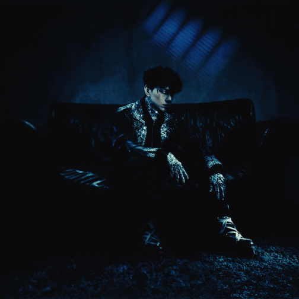
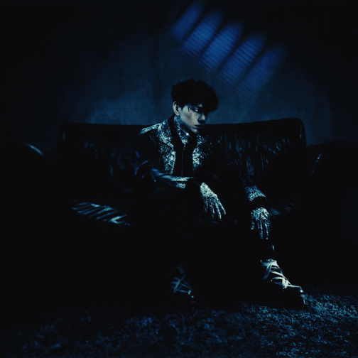

Big Baby Tape и Aarne впервые сработались в 2019 году на EP Егора ARGUMENTS & FACTS в треке «Surname».
В ноябре 2020 года они снова поработали на треке «Balance», позже Тейп в августе 2022 году принял участие на альбоме Арни AA LANGUAGE в треке «Ski Ski». В ноябре этого же года они вместе спродюсировали трек «Murder Rate» для kizaru.
В январе 2023 года они выпускают совместный трек «HOODAK MP3», в октябре Тейп появляется на альбоме Арни AA LANGUAGE 2, где принимает участие в трёх треках, а также в ноябре Арни спродюсировал один трек Тейпа из альбома VARSKVA.
28 июля 2024 года дуэт впервые выпускает свой первый совместный альбом PEEKABOO.
 Ice + Alabaster - 9mice & Kai Angel
Ice + Alabaster - 9mice & Kai AngelИцков Дмитрий Олегович (родился 4 февраля 1997 года в Брянске), наиболее известен как Kai Angel, является российским рэп-исполнителем, продюсером и звукорежиссёром.
Дмитриев Сергей Игоревич (родился 27 августа 2000 года во Владивостоке), наиболее известен как 9mice, является российским рэп-исполнителем, продюсером и креативным директором.
Вместе артисты начали выпускать музыку с осени 2022 года и стали известны после релиза трека «ОТРАВЛЕН ТОБОЙ».
Большую популярность исполнители обрели в 2023 году после выпуска совместного альбома HEAVY METAL. Затем в этом же году они основали творческий рэп-дуэт VIPERR.
 HURTZ - Toxi$
HURTZ - Toxi$Смелянский Андрей Леонидович (родился 21 марта 2004 года) — российский трэп-исполнитель родом из Москвы. Участник объединения RANDOM CREW.
Карьеру начал в 2019 году. Изначально делал песни исключительно на английском языке. Серьёзно начал набирать популярность 22 апреля 2023 года после публикации кружка в своём телеграм-канале, где он имитирует своим голосом мелодию из трека FENDIGLOCK'а — «Допинг».
Первый крупный проект после обретения широкой популярности — EP JAZZ DO IT, вышедший в июле 2023 года.